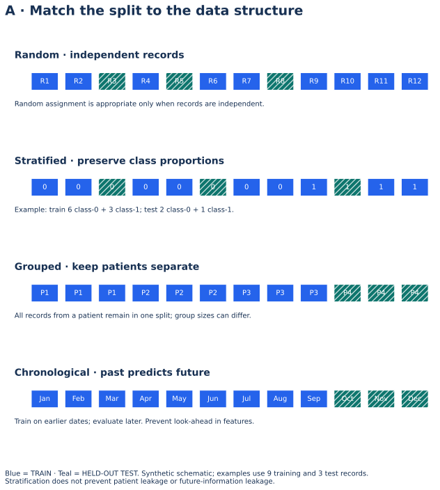
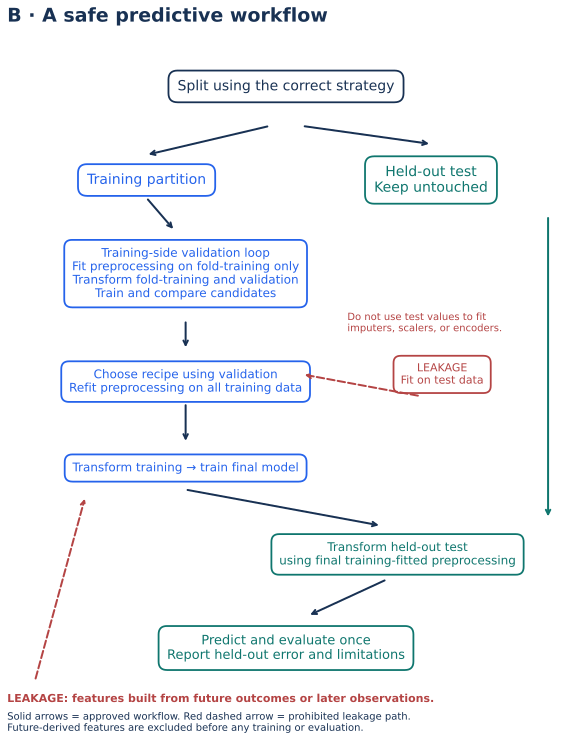

Lecture 9: Data Splitting & Validation
Train-test split (conceptual), cross-validation intro, bias-variance at a high level — course practical: split a dataset and compare descriptive stats.
1. Learning Objectives
- 1 Explain why evaluation data must be held out from training.
- 2 Perform a train-test split in Python and compare distributions.
- 3 Describe k-fold cross-validation at a conceptual level.
- 4 Relate bias and variance to under/overfitting in plain language.
- 5 Avoid leakage (scaling or feature stats computed on the full dataset).
2. Why Split?
If you tune and evaluate on the same rows, metrics look optimistic and fail in production. Hold out a test set that the model never sees during fitting or feature-fit steps.
3. Train-Test Split
import pandas as pd
from sklearn.model_selection import train_test_split
df = pd.read_csv("datasets/accident_teaching.csv")
train, test = train_test_split(df, test_size=0.2, random_state=42)
# Compare descriptive stats (course practical)
print(train[["casualties", "vehicles"]].describe())
print(test[["casualties", "vehicles"]].describe())For classification, use stratify=y so class rates stay similar. For time series, split by time — not random rows.
4. Cross-Validation (Intro)
K-fold: rotate which fold is validation; average metrics. More stable than a single split when data are limited. Nested CV and time-series CV are later topics.
5. Bias–Variance (High Level)
- High bias — model too simple; underfits; train and test both poor.
- High variance — model too flexible; memorizes train; test suffers.
- Goal: enough capacity to capture signal, enough regularization / data to generalize.
6. Practical
- 80/20 split on
accident_teaching.csv. - Compare mean/median casualties train vs test.
- Note one leakage risk if you min-max scaled before splitting.
7. Knowledge Check
Q1. The test set should be:
8. Summary
- Split before trusting performance numbers.
- Compare train/test descriptive stats as a sanity check.
- Bias vs variance frames under/overfitting.
Worked practice: Match validation to the data structure
Use stratification for independent class records, group splitting for repeated patients, and forward validation for dates. Verify groups do not overlap.
Interpretation check: A random split is unsuitable for evaluating future forecasting or new-patient generalization when related records cross partitions. Stratification alone does not solve these issues.
Download runnable/guided lab: L9 Splitting and Validation Lab
Setup, all labs, datasets, DAX measures and capstone guidance · Interactive retail teaching report
Choose a split for the data structure


Interpret: Does stratification prevent repeated-patient leakage?
No. Group splitting is needed to keep a patient entirely in one partition.
Read diagram labels (mobile text)
- Random · independent records
- R1
- R2
- R3
- R4
- R5
- R6
- R7
- R8
- R9
- R10
- R11
- R12
- Random assignment is appropriate only when records are independent.
- Stratified · preserve class proportions
- 0
- 0
- 0
- 0
- 0
- 0
- 0
- 0
- 1
- 1
- 1
- 1
- Example: train 6 class-0 + 3 class-1; test 2 class-0 + 1 class-1.
- Grouped · keep patients separate
- P1
- P1
- P1
- P2
- P2
- P2
- P3
- P3
- P3
- P4
- P4
- P4
- All records from a patient remain in one split; group sizes can differ.
- Chronological · past predicts future
- Jan
- Feb
- Mar
- Apr
- May
- Jun
- Jul
- Aug
- Sep
- Oct
- Nov
- Dec
- Train on earlier dates; evaluate later. Prevent look-ahead in features.
- A · Match the split to the data structure
- Blue = TRAIN · Teal = HELD-OUT TEST. Synthetic schematic; examples use 9 training and 3 test records.
- Stratification does not prevent patient leakage or future-information leakage.
A safe predictive workflow


Interpret: When must a scaler be fitted during cross-validation?
Inside each fold using only that fold’s training partition; final refitting uses all training data after recipe selection.
Read diagram labels (mobile text)
- B · A safe predictive workflow
- Split using the correct strategy
- Training partition
- Held-out test
- Keep untouched
- Training-side validation loop
- Fit preprocessing on fold-training only
- Transform fold-training and validation
- Train and compare candidates
- Choose recipe using validation
- Refit preprocessing on all training data
- Transform training → train final model
- Transform held-out test
- using final training-fitted preprocessing
- Predict and evaluate once
- Report held-out error and limitations
- LEAKAGE
- Fit on test data
- Do not use test values to fit
- imputers, scalers, or encoders.
- LEAKAGE: features built from future outcomes or later observations.
- Solid arrows = approved workflow. Red dashed arrow = prohibited leakage path.
- Future-derived features are excluded before any training or evaluation.
Your reading progress
Completion is self-reported reading progress, not a mastery score. Use the lab and interpretation checks to assess understanding.